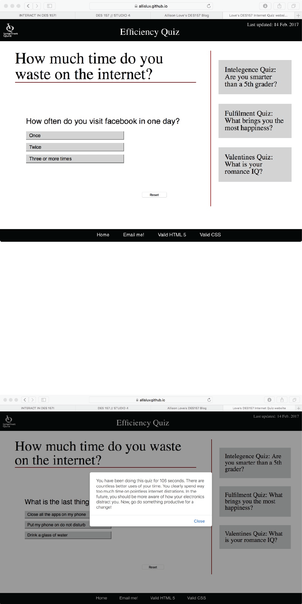
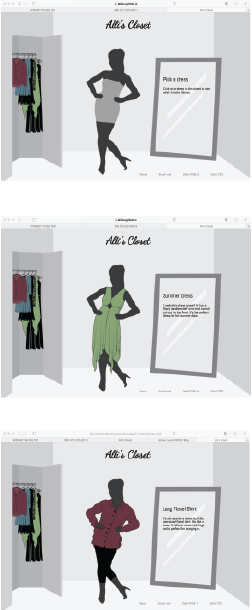
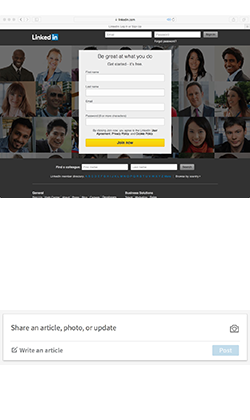

February 17, 2017
For this studio I created a quiz to show people that time is valuable
and they should spend it wisely. Specifically, it's meant to trick the
user into taking a quiz about wasting time, and then remind the user
that quizes like this are in fact a waste of time.
Though the design isn't very attractive, it was made to mimic quizes
that users would be familiar with from other sites. The quiz consists
of six questions. I thiught this was a good amount because it is
enough to take about a minute to get through, but isn't so many that
the user will get bored and leave the page before getting to the end.
After each question is answered the next replaces it on the screen,
like other quizes. It is effective because it is convincing.
The time based factors in my page are a little annoying. They are
supposed to discurage people from spening too much time on internet
quizes,so they are a good deterence. The tiptimers pop up when the
mouse hovers over the question for two seconds. This is about enough
time to read the question, but usually not enough time to answer, so
they pop up for almost every question. I used Math.random to pick
which of three tips will come up each time. The tips encourage the
user to work faster and not spend so much time on each question.
At the end of the quiz, instead of analyzing the answers that the
user gave, the javascript calculates the time that the user spend on
the quiz and tells them they could have used their time more
efficiently. The sassy tone of the page and the feeling of having gone
through the quiz for no reason should make peole think about how much
time they waste on the internet.

February 7, 2017
For this studio I archived five of the dresses I have in my closet.
I had fun design a dressing room with a closet and mirror to really
set the scene.
I connected the dresses by putting them altogether in a closet on the
left of the screen. This shows visually that they are all part of one
wardrobe. Even as the rest of the screen changes, the dresses in the
closet stay the same.
The interface is based around three main functions for each dress:
grow, shrink, and dress. The grow and shrink functions create a hover
effect for each dress in the closet to make it clear witch one the
mouse is interacting with. The grow function increases the size of
each dress by 10% when the mouse goes over it. The shrink function
puts the image back to it’s original size when the mouse goes off of
it. This is actually pretty helpful in my design because I sacrificed
some usability to get all the dresses into the closet. The dresses are
overlapping quite a bit, but the hover makes it clear which dress the
mouse is on at any given time.
Similarly, the items in the footer have a hover feature in my CSS
file. With a hover selector, I made the gray links at the bottom turn
black and use an underline when the mouse is over them. It occurred to
me that this could also be done in Javascript with event listeners,
just as the Javascript hovers could be written in the CSS file.
Finally, the dress function changes the silhouette and the
description when a dress is clicked. It does this by changing the
class of the elements between “show” and “hide.” First it finds all
the items that have a class of “show” and changes the class to “hide”
to make sure the elements aren’t being layered when a new dress
appears. Then the corresponding article and silhouette image of the
dress from the closet that was clicked are given the class “show” and
appear on the screen.
Ultimately this creates an interface where the user can virtually
try on some of the items in my wardrobe and get a taste of how I
spend my mornings picking outfits.

LinkedIn Forms
January 30, 2017
In “Learning
IxD From Everyday Objects,” Bill DeRouchey describes how interactive
design requires hierarchy, clarity, and purpose. The tools we have on
the web are primarily color, icons, words, size, shape, layout, and
sequence.
Recently I have been starting to apply for jobs and have been filling
out many online applications in the format of web-forms. One that I
have been going back to is LinkedIn.
Not only is it very useful for getting connected to employers, it is
easy to use very clear.
LinkedIn does a good job of creating hierarchy with sequence. As a
user enters the page it immediately prompts a login or creation of an
account. Creating an account starts by asking for a name, contact
information, and password. These are required and therefore are the
most important parts of setting up an account. LinkedIn then leads the
user through a series of decreasingly crucial requests like what the
account will be used for and an option to upload a photo.
The clarity on the page is defined by color. The background color on
the site is a pale gray and any parts of the form that require user
input are white. Though the difference in color is subtle, white has a
tendency to stand out, and in this case, creates a consistency that
makes it very clear when and where the user should be providing
information.

The iPhone Weather App
January 11, 2017
I’ve used many ugly smart phone apps, and I’ve played lots of
visually pleasing video games, but one of my favorite apps it the
iPhone weather app. It has been updated lots of times and has
developed into a useful and beautiful interface.
All of the important information about the current temperature and
weather are big and bold at the top so that it’s easy to find. It
has the forecast for the week next, and then details about humidity
etc. The layout is simple, easy to navigate, and is very pretty.
Beyond the layout, the background is also both useful and very
beautiful. The app turns the screen of a phone into a representation
of the sky outside in a given city. It looks like something straight
out of the Harry Potter books. The reflection of the sky reminds me
of the enchantment in the Great Hall at Hogwarts. The clouds, and
stars are very convincing, but my favorite is the rain. Though it’s
gorgeous the background is also very descriptive of what the weather
might look like outside.
I use the weather app daily to guide my choice in wardrobe,
activities, and means of transportation. I couldn’t think of a
better way to get the weather, besides walking out into the world of
course!